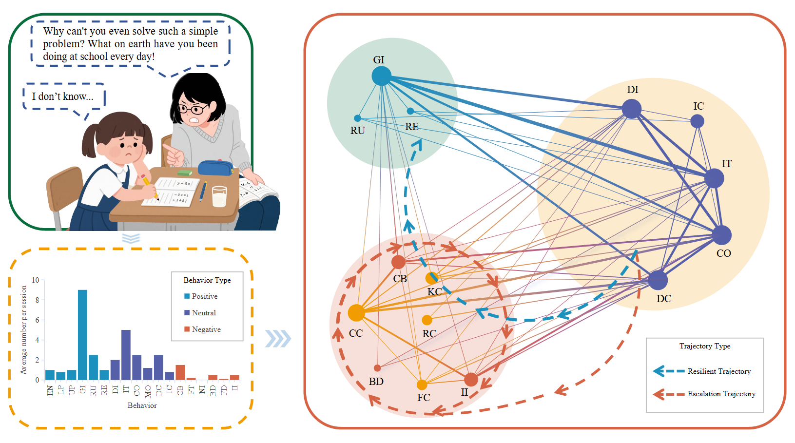
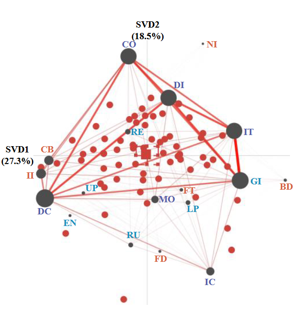
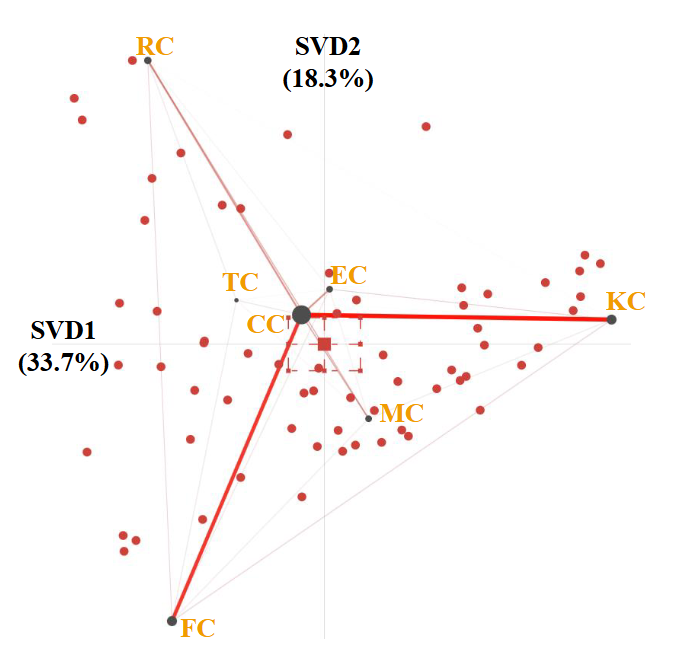
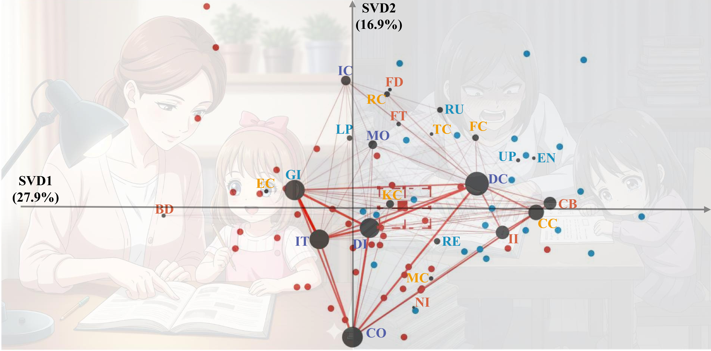
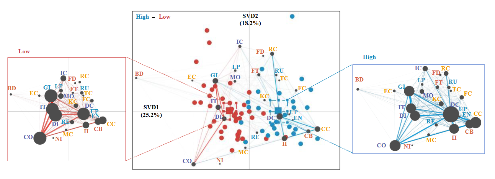
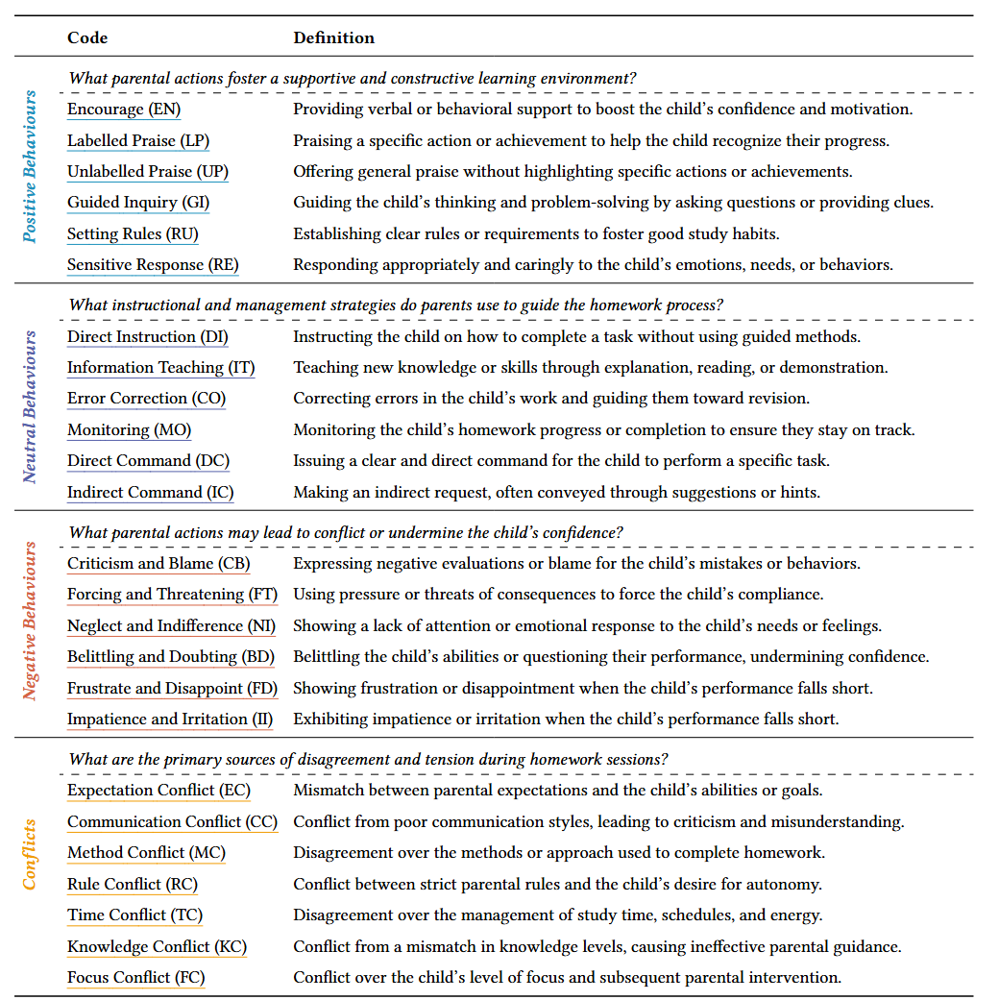

Parental involvement in homework is a pivotal high stakes domestic activity resulting in complex emotional dynamics. While prior work established behavioral taxonomy through frequency based counts, hidden structural logic governing conflict escalation and resilience remains a blind spot. To uncover these patterns, we propose Struct-ENA, a multi level structural modeling framework that deconstructs 475 hours of naturalistic parent and child interactions. Our analysis reveals that domestic interactions are not organized by simple emotional valence but by a functional backbone where a central directive hub serves as the common source for supportive reinforcement and negative frustration. We identify a fundamental structural bifurcation between a constructive instructional loop and a reactive conflict spiral, pinpointing communication conflict as the universal nexus through which specific disagreements are exacerbated. Beyond descriptive analysis, we operationalize these structural topologies as computational blueprints for generative AI. By treating ENA networks as probabilistic state machines, we achieve a form of intelligence degradation that allows large language models to bypass their default rationality bias and authentically simulate non rational behaviors such as nagging loops and emotional triggers. This research provides a computational bridge for the development of high fidelity parental training environments. Our contributions are available at https://struct-ena.github.io/struct-ena/.






@article{cogniload2025,
title = {Do Large Language Models Suffer from Cognitive Overload? A Benchmark and Orchestration Framework},
author = {Anonymous},
journal = {Anonymous},
year = {2025}
}